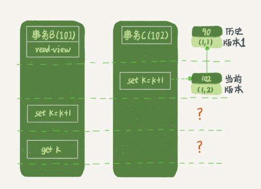

第六节 事务到底是隔离的还是不隔离的
事务隔离级别的时候提到过，如果是可重复读隔离级别，事务 T 启动的时候会创建一个视图 read-view，之后事务 T 执行期间，即使有其他事务修改了数据，事务 T 看到的仍然跟在启动时看到的一样。
上一篇文章中，行锁的时候又提到，一个事务要更新一行，如果刚好有另外一个事务拥有这一行的行锁，会被锁住，进入等待状态。
问题是，既然进入了等待状态，那么等到这个事务自己获取到行锁要更新数据的时候，它读到的值又是什么呢？
mysql> CREATE TABLE `t` (
`id` int(11) NOT NULL,
`k` int(11) DEFAULT NULL,
PRIMARY KEY (`id`)
) ENGINE=InnoDB;
insert into t(id, k) values(1,1),(2,2);
需要注意的是事务的启动时机
begin/start transaction 命令并不是一个事务的起点，在执行到它们之后的第一个操作 InnoDB 表的语句，事务才真正启动。
如果你想要马上启动一个事务，可以使用 start transaction with consistent snapshot 这个命令。
第一种启动方式，一致性视图是在执行第一个快照读语句时创建的；
第二种启动方式，一致性视图是在执行
start transaction with consistent snapshot时创建的。
都是默认 autocommit=1。
- 在这个例子中，事务 C 没有显式地使用
begin/commit，表示这个 update 语句本身就是一个事务，语句完成的时候会自动提交。 - 事务 B 在更新了行之后查询
- 事务 A 在一个只读事务中查询，并且时间顺序上是在事务 B 的查询之后。
答案是： 事务 B 查到的 k 的值是 3，而事务 A 查到的 k 的值是 1
我们来一点点的解释这个原因
1、MySQL中的视图
在 MySQL 里，有两个“视图”的概念：
- 一个是
view。它是一个用查询语句定义的虚拟表，在调用的时候执行查询语句并生成结果- 创建视图的语法是
create view… ，而它的查询方法与表一样。
- 创建视图的语法是
- 另一个是
InnoDB在实现MVCC时用到的一致性读视图，- 即
consistent read view，用于支持RC（Read Committed，读提交）和RR（Repeatable Read，可重复读）隔离级别的实现。
- 即
它没有物理结构，作用是事务执行期间用来定义“我能看到什么数据”。
2、“快照”在 MVCC 里是怎么工作的？
在可重复读隔离级别下，事务在启动的时候就“拍了个快照”。注意，这个快照是基于整库的。
库快照，不是行快照。所以不会进行MDL读锁等待，而是获取所有已提交的数据
看上去不太现实啊。如果一个库有 100G，那么我启动一个事务，MySQL 就要拷贝 100G 的数据出来，这个过程得多慢啊
实际上，我们并不需要拷贝出这 100G 的数据。
2-1 transaction id & row trx_id
InnoDB 里面每个事务有一个唯一的事务 ID，叫作 transaction id。它是在事务开始的时候向 InnoDB 的事务系统申请的，是按申请顺序严格递增的。
- 每行数据也都是有多个版本的。每次事务更新数据的时候，都会生成一个新的数据版本，并且把
transaction id赋值给这个数据版本的事务 ID，记为row trx_id transaction id==row trx_id- 同时，旧的数据版本要保留，并且在新的数据版本中，能够有信息可以直接拿到它。
数据表中的一行记录，其实可能有多个版本 (row)，每个版本有自己的 row trx_id。
如图所示，就是一个记录被多个事务连续更新后的状态。

- 虚线框里是同一行数据的 4 个版本，当前最新版本是 V4，k 的值是 22，它是被
transaction id为 25 的事务更新的，因此它的row trx_id也是 25。 - 图 中的三个虚线箭头，就是
undo log； - 而 V1、V2、V3 并不是物理上真实存在的，而是每次需要的时候根据当前版本和
undo log计算出来的。- 比如，需要 V2 的时候，就是通过 V4 依次执行 U3、U2 算出来。
2-2 一致性视图（read-view）
InnoDB 是怎么定义那个“100G”的快照的。
按照可重复读的定义，一个事务启动的时候，能够看到所有已经提交的事务结果。但是之后，这个事务执行期间，其他事务的更新对它不可见。
- 一个事务只需要在启动的时候声明说，“以我启动的时刻为准，如果一个数据版本是在我启动之前生成的，就认；如果是我启动以后才生成的，我就不认，我必须要找到它的上一个版本”。
- 如果“上一个版本”也不可见，那就得继续往前找。
- 还有，如果是这个事务自己更新的数据，它自己还是要认的。
在实现上， InnoDB 为每个事务构造了一个数组，用来保存这个事务启动瞬间，当前正在“活跃”的所有事务 ID。“活跃”指的就是，启动了但还没提交。
数组里面事务 ID 的最小值记为低水位，当前系统里面已经创建过的事务 ID 的最大值加 1 记为高水位。
- 低水位：数组内事务ID最小值。
- 高水位：当前系统已经创建的事务id的最大值+1（并不是数组内的最大）
低水位是【数组内】 高水位【系统内】
这个视图数组和高水位，就组成了当前事务的一致性视图（read-view）。
而数据版本的可见性规则，就是基于数据的 row trx_id 和这个一致性视图的对比结果得到的。
视图数组把所有的 row trx_id 分成了几种不同的情况。
对于当前事务的启动瞬间来说，一个数据版本的 row trx_id，有以下几种可能：
- 如果落在绿色部分，表示这个版本是已提交的事务或者是当前事务自己生成的，这个数据是可见的；
- 如果落在红色部分，表示这个版本是由将来启动的事务生成的，是肯定不可见的；
- 如果落在黄色部分，那就包括两种情况
- a. 若
row trx_id在数组中，表示这个版本是由还没提交的事务生成的，不可见； - b. 若
row trx_id不在数组中，表示这个版本是已经提交了的事务生成的，可见。
- a. 若
对于图 2 中的数据来说，如果有一个事务，它的低水位是 18，那么当它访问这一行数据时，就会从 V4 通过 U3 计算出 V3，所以在它看来，这一行的值是 11。
有了这个声明后，系统里面随后发生的更新，是不是就跟这个事务看到的内容无关了呢？因为之后的更新，生成的版本一定属于上面的 2 或者 3(a) 的情况，而对它来说，这些新的数据版本是不存在的，所以这个事务的快照，就是“静态”的了。
InnoDB 利用了“所有数据都有多个版本”的这个特性，实现了“秒级创建快照”的能力。
接下来，我们继续看一下图 1 中的三个事务，分析下事务 A 的语句返回的结果，为什么是 k=1。
这里，我们不妨做如下假设：
- 事务 A 开始前，系统里面只有一个活跃事务 ID 是 99；
- 事务 A、B、C 的版本号分别是 100、101、102，且当前系统里只有这四个事务；
- 三个事务开始前，
(1,1）这一行数据的row trx_id是 90。
- 事务 A 的视图数组就是[99,100],
- 事务 B 的视图数组是[99,100,101],
- 事务 C 的视图数组是[99,100,101,102]
为了简化分析, 只画出跟事务 A 查询逻辑有关的操作：
- ，第一个有效更新是事务 C，把数据从 (1,1) 改成了 (1,2)。这时候，这个数据的最新版本的
row trx_id是 102，而 90 这个版本已经成为了历史版本。 - 第二个有效更新是事务 B，把数据从 (1,2) 改成了 (1,3)。这时候，这个数据的最新版本（即
row trx_id）是 101，而 102 又成为了历史版本。 - 在事务 A 查询的时候，其实事务 B 还没有提交，但是它生成的 (1,3) 这个版本已经变成当前版本了。但这个版本对事务 A 必须是不可见的，否则就变成脏读了。
现在事务 A 要来读数据了，它的视图数组是[99,100]。当然了，读数据都是从当前版本读起的。所以，事务 A 查询语句的读数据流程是这样的：
- 找到 (1,3) 的时候，判断出
row trx_id=101，比高水位大，处于红色区域，不可见；
100是高水位，创建事务A的时候，系统现有的最大事务id是99，99 + 1 = 100。
- 接着，找到上一个历史版本，一看
row trx_id=102，比高水位大，处于红色区域，不可见； - 再往前找，终于找到了
（1,1)，它的row trx_id=90，比低水位小，处于绿色区域，可见。
虽然期间这一行数据被修改过，但是事务 A 不论在什么时候查询，看到这行数据的结果都是一致的，所以我们称之为一致性读。
一个数据版本，对于一个事务视图来说，除了自己的更新总是可见以外，有三种情况：
- 版本未提交，不可见；
- 版本已提交，但是是在视图创建后提交的，不可见；
- 版本已提交，而且是在视图创建前提交的，可见。
图 4 中的查询结果，事务 A 的查询语句的视图数组是在事务 A 启动的时候生成的，这时候：
- (1,3) 还没提交，属于情况 1，不可见；
- (1,2) 虽然提交了，但是是在视图数组创建之后提交的，属于情况 2，不可见；
- (1,1) 是在视图数组创建之前提交的，可见。
3、更新逻辑
事务 B 的 update 语句，如果按照一致性读，好像结果不对哦？
事务 B 的视图数组是先生成的，之后事务 C 才提交，不是应该看不见 (1,2) 吗，怎么能算出 (1,3) 来？
3-1 当前读（current read)

- 如果事务 B 在更新之前查询一次数据，这个查询返回的 k 的值确实是 1。
- 当它要去更新数据的时候，就不能再在历史版本上更新了，否则事务 C 的更新就丢失了。因此，事务 B 此时的
set k=k+1是在（1,2）的基础上进行的操作。 - 更新数据都是先读后写的，而这个读，只能读当前的值，称为“当前读”（current read）。
事务与事务之间的隔离不应该影响最终数据的落地。
就是说事务C先更新了数据，而后事务B也更新了同一份数据，以数据库的眼光来看这份数据的变动就是事务C的更新跟着事务B的更新，必须延续在一块而不能分开。
所以事务的更新必须是基于当前最新值来执行的，而读则是基于其视图，即可重复读的隔离，真的只是读层面的隔离。
在这个例子中，就是因为事务C的更新在前，事务B的更新必须延续事务C的结果，所以只能读取当前值再更新。而事务本身的更新是能被看到的，所以事务B再查询就只能是得到当前最新值
因此，在更新的时候，当前读拿到的数据是 (1,2)，更新后生成了新版本的数据 (1,3)，这个新版本的 row trx_id 是 101。
在执行事务 B 查询语句的时候，一看自己的版本号是 101，最新数据的版本号也是 101，是自己的更新，可以直接使用，所以查询得到的 k 的值是 3。
3-2 select 加锁 => 当前读
其实，除了 update 语句外，select 语句如果加锁，也是当前读。
所以，如果把事务 A 的查询语句 select * from t where id=1 修改一下，加上 lock in share mode 或 for update，也都可以读到版本号是 101 的数据，返回的 k 的值是 3。
下面这两个select语句，就是分别加了读锁（S 锁，共享锁）和写锁（X 锁，排他锁)
mysql> select k from t where id=1 lock in share mode;
mysql> select k from t where id=1 for update;
3-3 可重复读加锁
假设事务 C 不是马上提交的，而是变成了下面的事务 C’，会怎么样呢？
事务C’的不同是，更新后并没有马上提交，在它提交前，事务 B 的更新语句先发起了。
虽然事务C’还没提交，但是(1,2)这个版本也已经生成了，并且是当前的最新版本
事务 B 的更新语句会怎么处理呢？
“两阶段锁协议”就要上场了。事务 C’没提交，也就是说 (1,2) 这个版本上的写锁还没释放。而事务 B 是当前读，必须要读最新版本，而且必须加锁，因此就被锁住了，必须等到事务 C’释放这个锁，才能继续它的当前读。
到这里，我们把一致性读、当前读和行锁就串起来了。
事务的可重复读的能力是怎么实现的？
- 可重复读的核心就是一致性读（consistent read）；
- 而事务更新数据的时候，只能用当前读。
- 如果当前的记录的行锁被其他事务占用的话，就需要进入锁等待。
而读提交的逻辑和可重复读的逻辑类似，它们最主要的区别是：
- 在可重复读隔离级别下，只需要在事务开始的时候创建一致性视图，之后事务里的其他查询都共用这个一致性视图；
- 在读提交隔离级别下，每一个语句执行前都会重新算出一个新的视图。
在读提交隔离级别下，事务 A 和事务 B 的查询语句查到的 k，分别应该是多少呢？
“start transaction with consistent snapshot; ”的意思是从这个语句开始，创建一个持续整个事务的一致性快照。- 所以，在读提交隔离级别下，这个用法就没意义了，等效于普通的
start transaction。
读提交时的状态图，可以看到这两个查询语句的创建视图数组的时机发生了变化，就是图中的 read view 框 (( 注意：这里，我们用的还是事务 C 的逻辑直接提交，而不是事务C’))
这时，事务 A 的查询语句的视图数组是在执行这个语句的时候创建的，时序上 (1,2)、(1,3) 的生成时间都在创建这个视图数组的时刻之前。但是，在这个时刻：
- (1,3) 还没提交，属于情况 1，不可见；
- (1,2) 提交了，属于情况 3，可见。
所以，这时候事务 A 查询语句返回的是 k=2。 显然地，事务 B 查询结果 k=3。
4、本节小结
- InnoDB 的行数据有多个版本，每个数据版本有自己的
row trx_id，每个事务或者语句有自己的一致性视图。 -
普通查询语句是一致性读，一致性读会根据
row trx_id和一致性视图确定数据版本的可见性。 -
对于可重复读，查询只承认在事务启动前就已经提交完成的数据；
- 对于读提交，查询只承认在语句启动前就已经提交完成的数据；
而当前读，总是读取已经提交完成的最新版本。
update和加锁的select都是当前读，当前读，可能会遇到阻塞的情况，获取锁后，读的也是已提交的最新版本
- 为什么表结构不支持“可重复读”？这是因为表结构没有对应的行数据，也没有 row trx_id，因此只能遵循当前读的逻辑。
- 当然，MySQL 8.0 已经可以把表结构放在 InnoDB 字典里了，也许以后会支持表结构的可重复读。
4-1 全文总结
- innodb支持RC(Read commit)和RR(Repeatable Read)隔离级别实现是用的一致性视图(consistent read view)
- 事务在启动时会拍一个快照,这个快照是基于整个库的. 基于整个库的意思就是说一个事务内,整个库的修改对于该事务都是不可见的(对于快照读的情况) 如果在事务内select t表,另外的事务执行了DDL t表,根据发生时间,要嘛锁住要嘛报错
- 事务是如何实现的MVCC呢?
- 每个事务都有一个事务ID,叫做
transaction id(严格递增) - 事务在启动时,找到已提交的最大事务ID记为
up_limit_id。 - 事务在更新一条语句时,比如
id=1改为了id=2.会把id=1和该行之前的row trx_id写到undo log里, 并且在数据页上把id的值改为2,并且把修改这条语句的transaction id记在该行行头 - 再定一个规矩,一个事务要查看一条数据时,必须先用该事务的
up_limit_id与该行的transaction id做比对, - 如果
up_limit_id>=transaction id,那么可以看.如果up_limit_id<transaction id,则只能去undo log里去取。去undo log查找数据的时候,也需要做比对,必须up_limit_id>transaction id,才返回数据
- 每个事务都有一个事务ID,叫做
- 什么是当前读,由于当前读都是先读后写,只能读当前的值,所以为当前读.会更新事务内的
up_limit_id为该事务的transaction id - 为什么rr能实现可重复读而rc不能,分两种情况
- 快照读的情况下,rr不能更新事务内的
up_limit_id, 而rc每次会把up_limit_id更新为快照读之前最新已提交事务的transaction id,则rc不能可重复读 - 当前读的情况下,rr是利用
record lock+gap lock来实现的,而rc没有gap,所以rc不能可重复读
- 快照读的情况下,rr不能更新事务内的
4-2 思考题
我用下面的表结构和初始化语句作为试验环境，事务隔离级别是可重复读。现在，我要把所有“字段 c 和 id 值相等的行”的 c 值清零，但是却发现了一个“诡异”的、改不掉的情况。请你构造出这种情况，并说明其原理。
mysql> CREATE TABLE `t` (
`id` int(11) NOT NULL,
`c` int(11) DEFAULT NULL,
PRIMARY KEY (`id`)
) ENGINE=InnoDB;
insert into t(id, c) values(1,1),(2,2),(3,3),(4,4);